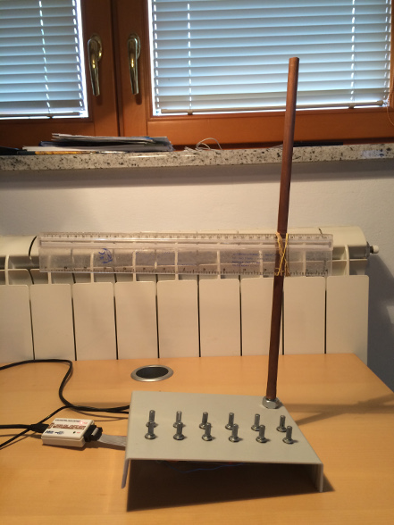
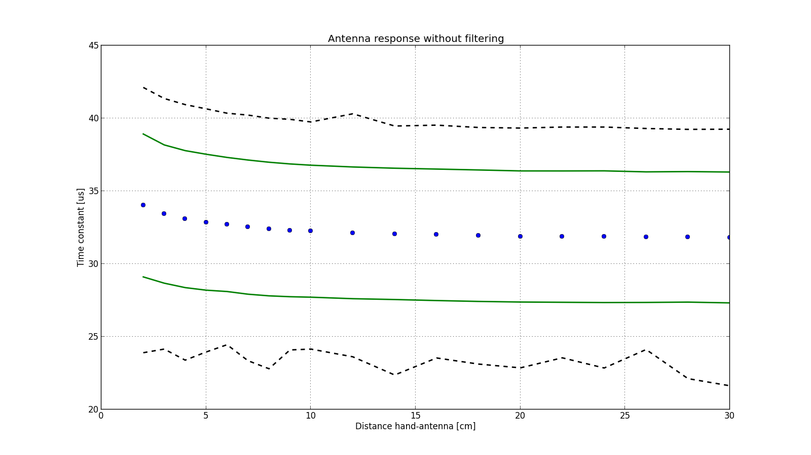
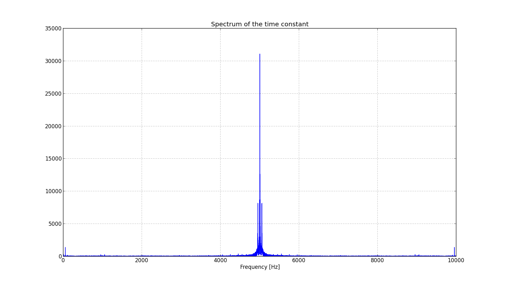
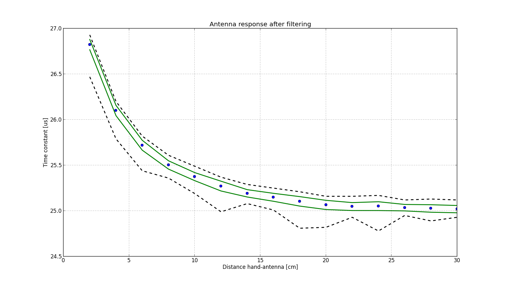

- on Sun 09 November 2014
Category: Theremin,
Last week I briefly explained how theremin works. I also presented my idea to develop a digital version, using FPGA as a detector of distance between hand and antenna.
You have probably already heard a joke about theory and practice.
Theory is when you know everything but nothing works. Practice is when everything works but no one knows why. Here we combine the two, nothing works and no one knows why.
Jokes aside, today we will try to measure the time constant of the antenna. In this implementation of theremin the measured time constant will be a control for tone pitch. Having a good measurement of time constant is therefore very important. A good instrument will produce stable tone when hand is hold still. Also, the quality of measurement of time constant determines a difference between two consecutive tones and fine control of the pitch is also desired.
Here you can see this highly advanced test - a ruler strapped to the antenna. This will allow us to measure the relationship between time constant and distance of the hand.

Since the ruler is made out of plastic (we should say dielectric, when studying electric fields) it won't affect the antenna field.
The FPGA is producing a square wave signal at 10kHz, which is then sent to antenna through a 2.2 MOhm resistor. The resistor is on the other side connected to antenna, thus creating an RC circuit. The voltage on antenna is feed back to FPGA through a Schmitt Trigger to improve the measured value. The module in FPGA measures how much time did it take for voltage on antenna to reach certain value (determined by Schmitt Trigger). This time is directly correlated to time constant and therefore to capacitance of the antenna.
Here we see what the FPGA measured when I placed hand on different distance from antenna.

The blue dots denote mean value, the green lines denote one standard deviation and the black lines denote minimum and maximum value.
Right now, the measurements do not look very promising, we can see some increase of time constant as hand approaches antenna, but the noise is extremely high.
If we have a look at the frequency spectrum of the measurement, we see the reason for the noise.

The antenna is 45 cm long copper rod and acts not only as a capacitor for theremin but also as radio antenna. All the frequency components above Nyquist frequency (which is 5000 kHz in our case) are being aliased to lower frequencies in our frequency range. A 50Hz signal from mains is also being picked up.
We need a filter! A filter will reject all the undesired frequencies and that will greatly improve.
I will write another article on filtering in FPGA, meanwhile let's enjoy much improved results:
